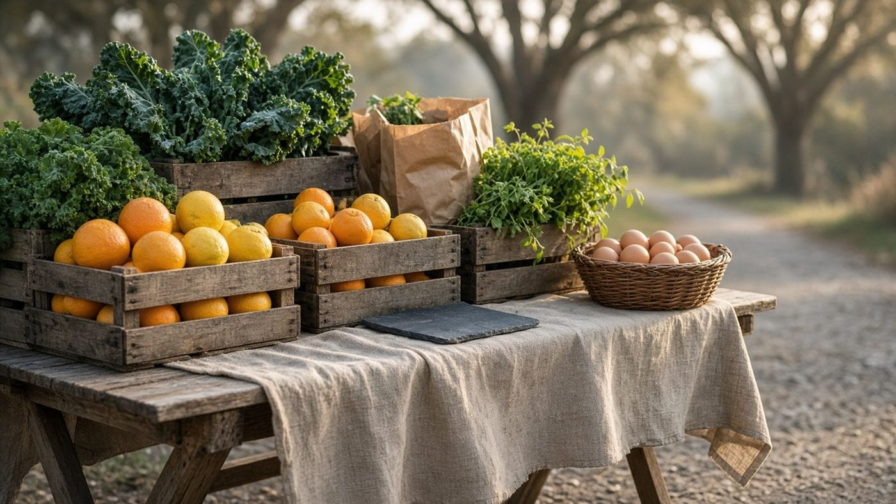

You do not need a van full of product to look ready on Saturday morning. You need a tight list, a table people can read from the sidewalk, and enough stock to last the rush without hauling half of it back home.
Most overbuying happens on Thursday night, when it still feels safer to pack “just a little extra.” The fix is a short plan you finish at home, before anything goes in a crate.
Write the list on Thursday, not in the parking lot. Three columns are enough: what you will sell, how many units you can reasonably move, and what has to come home if it does not sell. A one-page packing list for market mornings is enough.
If eight jars of jam came home last Sunday, do not pack twelve more just in case. Bring the leftovers to the front of the table and add two new flavors, not six.
Put the price on a small card while you are still at home. If you are unsure about a dozen muffins or a bag of citrus, use the same method from how we price a dozen muffins for a Saturday stall and write the number down once.
The first three feet of the stall do most of the work. A clean header sign, one featured item at eye level, and prices that do not hide under the produce will stop more people than a table packed edge to edge. If you want a photo for the week’s post, shoot that front crate at home, using the same setup as photographing products on a kitchen table.
The same pass, even when the sites are set up differently. Use it on unpublished drafts already in WordPress, on posts that still need to be uploaded, and on new pieces as they come out of production.
If a site uses a different theme, builder, or SEO plugin, the fields may live in a different panel. The checks stay the same. I run this list on every post so a batch of drafts, and later sites, come out consistent.